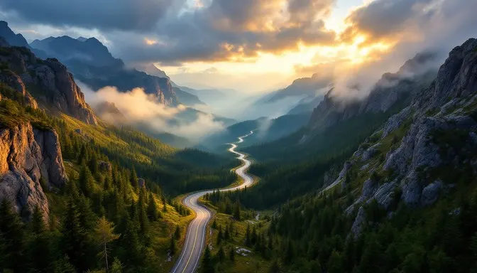

Most storytelling begins with events. We begin with place.
Before politics, before economics, before conflict or cooperation — there is geography. It is the fixed foundation upon which all human activity unfolds.

Geography shapes movement. Movement creates opportunity. Opportunity, in turn, defines the shape of civilisation.
Our work looks beyond what happened, to understand why it happened there. We trace the routes beneath the headlines, the systems beneath the events, and the patterns that persist across centuries.
This is what we mean by the geo‑cognitive perspective: viewing the world not as a static map, but as a living, connected system — formed and reshaped by the constant flow of people, ideas, and influence.